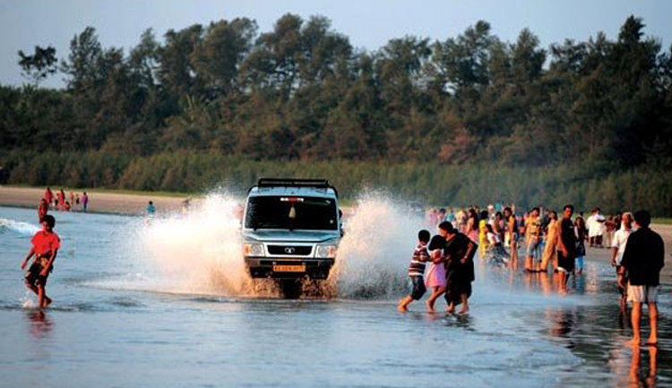

Kannur is a coastal city in the south Indian state of Kerala. It was once an ancient trading port. Enduring monuments such as 16th-century St. Angelo Fort, once occupied by European colonial forces, show the city’s significant role in the spice trade. Housed in a former palace, the Arakkal Museum highlights Kerala's one Muslim royal family. The palm-fringed sands of Payyambalam Beach run along Kannur’s western shore.
Located on the Malabar Coast of Kerala, Kannur (fondly known as Cannanore), is a beautiful city bundled with a plethora of sightseeing options like beaches, monuments, ancient temples and picnic spots. Steeped in the distinctive local art forms like Theyyam, Kannur still has an aura of the bygone colonial era. The deep footprints of the Dutch, the Portuguese, the British and the Mysore Sultanate are still imbibed into the town and can be witnessed all around. The town is blessed with exceptional art of weaving that has earned it the title of the land of loons and huge cashew trees perhaps rooted by Portuguese. Take an evening stroll near the lighthouse beach or explore Portuguese history at St. Angelo's Fort while you are in Kannur.
| KANNUR FORT | MUZHAPILNGAD BEACH | PALAKAYAMTHATTU | AIRPORT KIAL |
|---|---|---|---|
|
 | |
|
In 1498, during Vasco da Gama's visit to India, the local Kolathiri king granted the land to Portuguese to build a settlement in present-day Kerala. On 23 October 1505, he gave the Portuguese leader Francisco de Almeida the permission to build a fort at the site. The construction activity began the very next day, on 24 October 1505, when Goncalo Gil Barbosa - the Portuguese factor of Cannanore (Kannur) - laid the foundation stone. The construction of the wooden fort was completed on 30 October 1505: its first Captain was Lourenco Britto, who led a garrison of 150 Portuguese men, and controlled two ships in the sea. After the fort was completed, Almeida began using the title "Viceroy", and in 1507, he started the construction of a stone fort at the site
Muzhappilangad Beach010.jpg This beach is the longest Drive-In Beach in Asia and is featured among the top 6 best beaches for driving in the world in BBC article for Autos.[3][4] Muzhappilangad is the only Asian beach featured in the list. Even though Goa has many beautiful beaches, it does not have a Drive-in beach. It is considered as the longest drive-in beach in Asia.[5] The beach festival is celebrated in the month of April and it is one of the important tourist attraction in the district of Kannur in Kerala. The youth also try many driving stunts in cars like drifting and wheeling in bikes as this is a paradise for driving along the shore. There is an unpaved road winding through coconut groves leading to the beach. To get to this road, if you are driving from Tellicherry towards Kannur, take the left turn just before the first railway crossing you encounter after crossing the Moidu bridge. The beach is about 3.8 kms long and curves in a wide area providing a good view of Kannur on the north. Local laws allow beachgoers to drive for a full 3.4 kms directly on the sands of the beach. The beach is bordered by black rocks, which also protect it from the stronger currents of the ocean. These rocks provide habitat for Blue mussel, a delicious seafood. Beach attracts bird-watchers from far off places as hundreds of birds flock here during various seasons.
Palakkayam Thattu is a beautiful and well maintained hill station in Kannur. This lesser-known location is a misty mountain in the Western Ghats have an altitude of 3500 Ft from Mean Sea Level. Western Ghat Mountain Ranges are renowned for their rich bio-diversity. Paithalmala, Another famous hill station in Kannur District is just a few kilometers away from Palakkayam Thattu. This is one of the Safest hill stations in Kannur for spending time with family. If you visit here during the monsoons, you can witness the scene of the monsoon clouds hugging the hills along with the panoramic view of Western Ghats, which is just something that you cant express in words. Palakkayam Thattu is undoubtedly a Heavenly place for hangout with friends and family. It offers a good off road experience too if you are interested in off roading.
Kannur International Airport (IATA: CNN, ICAO: VOKN) is an airport serving the North Malabar region of Kerala, Kodagu and Mysore districts of Karnataka and Mahé district of Puducherry in India. It is located 28 km (17 mi) east of Kannur town, and 24 km (15 mi) east of Thalassery town, near the municipality of Mattannur in Thalassery taluk of Kannur district in Kerala. It is owned and operated by Kannur International Airport Limited (KIAL), a public–private consortium. The airport opened for commercial operations on 9 December 2018.[5] The airport could serve one million passengers in just nine months since commercial operations began.[6][7] Amidst the COVID-19 crisis the greenfield airport could maintain stable growth and it achieved the milestone of two million passengers in the twenty-third month of operations in November 2020.[8] The first aircraft to land was an IAF (Indian Air Force) aircraft that touched down at the airport on 29 February 2016.[9] The first trial passenger flight operation conducted on 20 September 2018 using a Boeing 737-800 aircraft from Air India Express.[10][11] On the inaugural day, 9 December 2018, an Air India Express flight IX 715 (Boeing 737-800) took off to Abu Dhabi at 10:13 (IST), becoming the first commercial passenger aircraft to depart from Kannur International Airport.[12][5][13][14] The Airport was inaugurated by Minister of Civil Aviation, Suresh Prabhu and Kerala Chief Minister Pinarayi Vijayan.